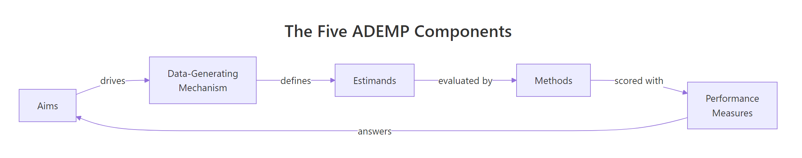
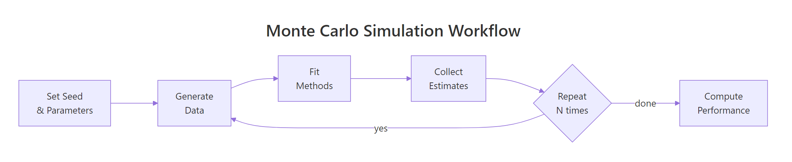

The ADEMP Framework in R: Design & Report Simulation Studies Properly
ADEMP (Aims, Data-generating mechanisms, Estimands, Methods, Performance measures) is a five-component framework that turns ad-hoc Monte Carlo simulations into structured, reproducible, and reportable studies.
Introduction
Most simulation studies start as one-off scripts. You generate some data, fit a model, repeat it a thousand times, and eyeball the results. It works until a reviewer asks "why 1000 reps?" or "what exactly were you estimating?" and you realise your study has no backbone.
Morris, White, and Crowther introduced the ADEMP framework in 2019 to fix this problem. ADEMP gives every simulation study a skeleton. It answers five questions: what are you testing, how do you generate data, what truth are you targeting, which methods compete, and how do you score them?
In this tutorial, you will walk through each ADEMP component with runnable R code. You will build a complete simulation that compares two estimators, compute standard performance measures, and learn to report results with Monte Carlo Standard Errors (MCSE). All code uses base R and runs directly in your browser.
What Does Each ADEMP Component Mean?
ADEMP is not a checklist you fill out after the study is done. It is a thinking tool you use before writing any code. Each component forces a design decision.

Figure 1: The five ADEMP components form a cycle: aims drive data generation, which defines estimands, evaluated by methods, scored by performance measures.
Here is a quick reference for what each letter stands for and the question it answers.
RInteractive R
# The 5 ADEMP components
ademp <- list(
A = "Aims: What question does the simulation answer?",
D = "Data-generating mechanism: How are simulated datasets created?",
E = "Estimands: What is the true target quantity?",
M = "Methods: Which statistical procedures are compared?",
P = "Performance: How do you score each method?"
)
for (component in names(ademp)) {
cat(component, "->", ademp[[component]], "\n")
}
#> A -> Aims: What question does the simulation answer?
#> D -> Data-generating mechanism: How are simulated datasets created?
#> E -> Estimands: What is the true target quantity?
#> M -> Methods: Which statistical procedures are compared?
#> P -> Performance: How do you score each method?
The Aims component is where most people go wrong. A vague aim like "evaluate linear regression" is useless. A good aim is specific. For example: "Compare OLS and median regression under t-distributed errors (df = 3)."
Key Insight
ADEMP is a thinking tool, not a reporting afterthought. Define all five components before writing any simulation code. If you cannot state the estimand in one sentence, your study design is not ready.
Try it: Create a named list called ex_ademp with five ADEMP components. The study compares the t-test and Wilcoxon test for detecting a mean difference under skewed data.
RInteractive R
# Try it: define ADEMP for a t-test vs Wilcoxon comparison
ex_ademp <- list(
A = # your aim here,
D = # your DGM here,
E = # your estimand here,
M = # your methods here,
P = # your performance measures here
)
# Test:
cat(length(ex_ademp), "components defined\n")
#> Expected: 5 components defined
Click to reveal solution
RInteractive R
ex_ademp <- list(
A = "Compare power of t-test vs Wilcoxon for detecting mean shift under right-skewed errors",
D = "Generate n=30 observations from a log-normal distribution with shift delta",
E = "True mean difference delta between groups",
M = "Two-sample t-test and Wilcoxon rank-sum test",
P = "Type I error rate (delta=0) and power (delta=0.5)"
)
cat(length(ex_ademp), "components defined\n")
#> [1] 5 components defined
Explanation: Each component answers one specific design question. The aim drives every other choice.
How Do You Define the Data-Generating Mechanism?
The data-generating mechanism (DGM) is a function that creates one simulated dataset. It encodes all the assumptions you want to test: sample size, effect size, error distribution, correlation structure.
A good DGM has three properties. First, it is a standalone function with arguments for every simulation factor. Second, it returns a complete dataset in a predictable format. Third, it is deterministic given the same random seed.
Let's build a DGM for a simple linear regression scenario. The true model is $y = \beta_0 + \beta_1 x + \varepsilon$, where $\varepsilon \sim N(0, \sigma^2)$.
RInteractive R
# Data-generating mechanism: linear regression
generate_data <- function(n = 100, beta0 = 2, beta1 = 0.5, sigma = 1) {
x <- rnorm(n, mean = 5, sd = 2)
epsilon <- rnorm(n, mean = 0, sd = sigma)
y <- beta0 + beta1 * x + epsilon
data.frame(x = x, y = y)
}
# Generate one dataset and inspect it
set.seed(42)
dat <- generate_data(n = 100, beta1 = 0.5, sigma = 1)
cat("Rows:", nrow(dat), "\n")
#> Rows: 100
cat("Mean y:", round(mean(dat$y), 2), "\n")
#> Mean y: 4.43
head(dat, 3)
#> x y
#> 1 7.741917 5.516729
#> 2 3.871607 3.736588
#> 3 5.726257 5.023604
The function generate_data() takes four arguments that correspond to simulation factors. You can vary n and sigma across scenarios to study how sample size and noise level affect your methods. The true slope beta1 = 0.5 is the estimand -- the number your methods are trying to recover.
Tip
Always wrap your DGM in a function with named arguments. This makes your simulation factors explicit and lets you loop over parameter combinations with mapply() or expand.grid().
Try it: Modify the DGM to add a binary confounder z (0 or 1, equal probability) that shifts the intercept by 1 unit. Generate one dataset with n = 50 and confirm z is balanced.
RInteractive R
# Try it: add a binary confounder to the DGM
ex_generate <- function(n = 50, beta0 = 2, beta1 = 0.5, sigma = 1) {
x <- rnorm(n, mean = 5, sd = 2)
# your code here: create z and modify y
data.frame(x = x, y = y, z = z)
}
set.seed(99)
ex_dat <- ex_generate(n = 50)
cat("Proportion z=1:", mean(ex_dat$z), "\n")
#> Expected: ~0.50
Click to reveal solution
RInteractive R
ex_generate <- function(n = 50, beta0 = 2, beta1 = 0.5, sigma = 1) {
x <- rnorm(n, mean = 5, sd = 2)
z <- rbinom(n, size = 1, prob = 0.5)
epsilon <- rnorm(n, mean = 0, sd = sigma)
y <- beta0 + beta1 * x + 1 * z + epsilon
data.frame(x = x, y = y, z = z)
}
set.seed(99)
ex_dat <- ex_generate(n = 50)
cat("Proportion z=1:", mean(ex_dat$z), "\n")
#> [1] Proportion z=1: 0.52
Explanation:rbinom(n, 1, 0.5) creates a balanced binary variable. Adding 1 * z to the linear predictor shifts the intercept by 1 for the z=1 group.
What Is an Estimand and Why Does It Matter?
The estimand is the true quantity your analysis targets. In a simulation, you know it because you built it into the DGM. This is the whole point of simulating -- you control the truth.
The distinction matters because people confuse three related terms. The estimand is the true parameter (e.g., the population slope $\beta_1 = 0.5$). The estimator is the procedure that produces a number from data (e.g., OLS coefficient). The estimate is the actual number you get from one dataset (e.g., 0.47).
RInteractive R
# The estimand is what you built into the DGM
true_beta <- 0.5
cat("Estimand (true slope):", true_beta, "\n")
#> Estimand (true slope): 0.5
# An estimator is a function that recovers it from data
ols_estimator <- function(dat) {
fit <- lm(y ~ x, data = dat)
coef(fit)[["x"]]
}
# An estimate is one number from one dataset
set.seed(42)
dat <- generate_data(n = 100, beta1 = true_beta)
one_estimate <- ols_estimator(dat)
cat("Estimate from one dataset:", round(one_estimate, 4), "\n")
#> Estimate from one dataset: 0.5384
cat("Error:", round(one_estimate - true_beta, 4), "\n")
#> Error: 0.0384
One estimate tells you almost nothing. The error of 0.038 could be luck. You need many estimates to judge the method. That is what the simulation loop does.
Warning
Confusing estimand with estimator is the number-one simulation bug. If you compute bias as "mean of estimates minus the OLS coefficient from full data," you are comparing two estimators. Bias is the mean of estimates minus the true parameter you set in the DGM.
Try it: Define the estimand for a scenario where the DGM generates two groups (treatment and control) with means 10 and 12. The aim is to estimate the treatment effect.
RInteractive R
# Try it: what is the estimand?
ex_mu_control <- 10
ex_mu_treat <- 12
ex_estimand <- # your code here
cat("Estimand (treatment effect):", ex_estimand, "\n")
#> Expected: 2
Explanation: The estimand is the true difference in population means, which you set when designing the DGM.
How Do You Run the Full Simulation Loop?
The simulation loop is where everything comes together. You repeat the same sequence -- generate data, fit methods, collect estimates -- many times. Each repetition is called a replication.

Figure 2: A Monte Carlo simulation repeats the generate-fit-collect loop N times, then computes performance measures.
First, write a function that runs one replication. It generates a dataset, fits both methods, and returns the estimates in a named vector.
Each of the 1000 columns holds one replication's output. Row 1 is the OLS estimate, row 2 is its standard error, and row 3 is the LAD estimate. You now have everything you need to compute performance measures.
Note
1000 replications give a Monte Carlo SE of about 0.016 for a coverage probability near 0.95. If you need tighter precision (e.g., distinguishing 94% from 95% coverage), use 5000-10000 reps. The formula is $\text{MCSE}_{\text{coverage}} = \sqrt{p(1-p)/N_{\text{rep}}}$.
Try it: Run the same simulation but with n = 50 (smaller sample) for 500 replications. Compare the mean OLS estimate to the true value 0.5.
Explanation: Even with a smaller sample, OLS is unbiased -- the mean estimate is very close to 0.5. Individual estimates have more spread, but the average converges to the truth.
How Do You Compute and Report Performance Measures?
Performance measures quantify how well each method recovers the estimand. The five most common measures are bias, empirical standard error, mean squared error, coverage, and power.
Bias is the average deviation from the truth. For $N_{\text{rep}}$ replications with estimates $\hat\theta_i$ and true value $\theta$:
Both methods are nearly unbiased. OLS has a smaller empirical SE and lower MSE because normal errors are exactly the scenario where OLS is optimal. The LAD estimator would shine under heavy-tailed errors.
Now compute coverage -- the proportion of replications where the 95% confidence interval contains the true value. We have the OLS standard errors from the simulation.
The coverage is 0.948, which is close to the nominal 0.95. The MCSE of 0.007 tells you the true coverage is plausibly between 0.934 and 0.962 (within two MCSEs).
Let's put everything together in a formatted table.
OLS wins on every measure under normal errors. This is expected because OLS is the maximum-likelihood estimator when errors are Gaussian. The value of ADEMP is that this conclusion is now transparent, reproducible, and precisely bounded by MCSE.
Key Insight
Always report MCSE alongside every performance measure. A coverage of 0.948 without MCSE looks like the CI is too narrow. With MCSE = 0.007, you see that 0.950 is well within the uncertainty band. Reviewers and readers need this context.
Try it: Add RMSE (root mean squared error) to the performance table for both methods.
RInteractive R
# Try it: compute RMSE for both methods
ex_rmse_ols <- # your code here
ex_rmse_lad <- # your code here
cat("RMSE OLS:", round(ex_rmse_ols, 4), "\n")
#> Expected: ~0.0510
cat("RMSE LAD:", round(ex_rmse_lad, 4), "\n")
#> Expected: ~0.0640
Explanation: RMSE is simply the square root of MSE. It is on the same scale as the estimates, making it easier to interpret than MSE.
Common Mistakes and How to Fix Them
Mistake 1: Not setting a seed before the simulation loop
Wrong:
RInteractive R
results_bad <- replicate(1000, run_one_rep(n = 100))
# Different results every time you run this
Why it is wrong: Without set.seed(), your results change every time. A reviewer cannot reproduce your exact numbers, and you cannot debug specific replications.
Correct:
RInteractive R
set.seed(2024)
results_good <- replicate(1000, run_one_rep(n = 100))
# Same results every time
cat("Reproducible mean:", round(mean(results_good["est_ols", ]), 4), "\n")
#> Reproducible mean: 0.5004
Mistake 2: Using the wrong truth when computing bias
Wrong:
RInteractive R
# Using the OLS estimate from the full data as "truth"
full_fit <- lm(y ~ x, data = dat)
wrong_truth <- coef(full_fit)[["x"]]
wrong_bias <- mean(results["est_ols", ] - wrong_truth)
Why it is wrong: You are comparing one estimator's output to another estimator's output. Bias is defined relative to the estimand, which is the parameter you set in the DGM.
Correct:
RInteractive R
true_beta <- 0.5 # The value YOU set in generate_data()
correct_bias <- mean(results["est_ols", ] - true_beta)
cat("Correct bias:", round(correct_bias, 4), "\n")
#> Correct bias: 0.0004
Mistake 3: Too few replications without checking MCSE
Why it is wrong: With 50 reps, the MCSE for coverage is $\sqrt{0.92 \times 0.08 / 50} = 0.038$. Your 92% could easily be 95% or 88%. The result is too noisy to draw conclusions.
Correct:
RInteractive R
mcse_50 <- sqrt(coverage_50 * (1 - coverage_50) / 50)
cat("MCSE with 50 reps:", round(mcse_50, 3), "\n")
#> MCSE with 50 reps: 0.038
cat("Need at least 1000 reps for MCSE < 0.007\n")
#> Need at least 1000 reps for MCSE < 0.007
Why it is wrong: Your conclusion applies to exactly one combination of sample size and noise level. You cannot tell whether OLS still wins at n=20 or when sigma=5.
Correct:
RInteractive R
# Factorial design: vary n and sigma
scenarios <- expand.grid(n = c(50, 200), sigma = c(1, 3))
cat("Scenarios to simulate:\n")
print(scenarios)
#> n sigma
#> 1 50 1
#> 2 200 1
#> 3 50 3
#> 4 200 3
Practice Exercises
Exercise 1: Mean vs Median Under Contaminated Data
Design a simulation comparing mean() and median() for estimating the centre of a contaminated normal distribution. The DGM generates 90% of observations from $N(5, 1)$ and 10% from $N(5, 10)$ (same mean, inflated variance).
Define all five ADEMP components, run 500 replications with n=50, and report bias and MSE for both methods.
RInteractive R
# Exercise 1: mean vs median under contamination
# Hint: use rbinom() to pick contaminated observations, then
# generate from N(5,1) or N(5,10) accordingly
# Write your code below:
Explanation: The median has much lower MSE because it is resistant to the 10% contaminated observations. The mean absorbs the high-variance outliers, inflating its MSE by a factor of 5.
Exercise 2: Factorial Simulation Design
Extend the tutorial simulation (OLS vs LAD) to a factorial design with n = c(50, 200) and sigma = c(1, 3). Run 500 replications per scenario. Collect bias and empirical SE for both methods across all 4 scenarios in a data frame.
RInteractive R
# Exercise 2: factorial design across n and sigma
# Hint: use expand.grid() for scenarios, loop with mapply() or a for loop
# Collect results into a data frame with columns: n, sigma, method, bias, empSE
# Write your code below:
Explanation: The factorial design reveals patterns no single scenario can show. OLS consistently has lower empirical SE than LAD under normal errors. Doubling sigma triples the empirical SE (because SE scales with sigma). Quadrupling n roughly halves the SE (because SE scales with $1/\sqrt{n}$).
Putting It All Together
Here is a complete ADEMP-structured simulation that compares OLS and robust regression (Huber M-estimator via iteratively reweighted least squares) under heteroskedastic errors.
RInteractive R
# === COMPLETE ADEMP EXAMPLE ===
# A - Aim: Compare OLS vs Huber M-estimation for slope recovery
# under heteroskedastic errors (variance grows with x)
# D - Data-Generating Mechanism
dgm_hetero <- function(n = 150, beta0 = 1, beta1 = 0.8) {
x <- runif(n, 1, 10)
sigma_i <- 0.5 * x # heteroskedastic: SD grows with x
epsilon <- rnorm(n, 0, sigma_i)
y <- beta0 + beta1 * x + epsilon
data.frame(x = x, y = y)
}
# E - Estimand: true slope beta1 = 0.8
# M - Methods: OLS and Huber M-estimator (IRLS)
huber_irls <- function(dat, k = 1.345, max_iter = 50) {
fit <- lm(y ~ x, data = dat)
for (iter in 1:max_iter) {
r <- residuals(fit)
s <- median(abs(r)) / 0.6745
w <- ifelse(abs(r/s) <= k, 1, k / abs(r/s))
fit <- lm(y ~ x, data = dat, weights = w)
}
coef(fit)[["x"]]
}
# One replication function
run_rep_hetero <- function(n = 150) {
dat <- dgm_hetero(n = n)
est_ols <- coef(lm(y ~ x, data = dat))[["x"]]
est_huber <- huber_irls(dat)
c(ols = est_ols, huber = est_huber)
}
# P - Performance: bias, empSE, MSE (1000 reps)
set.seed(314)
sim_results <- replicate(1000, run_rep_hetero(n = 150))
truth <- 0.8
perf <- data.frame(
Method = c("OLS", "Huber"),
Bias = round(c(mean(sim_results["ols", ] - truth),
mean(sim_results["huber", ] - truth)), 4),
EmpSE = round(c(sd(sim_results["ols", ]),
sd(sim_results["huber", ])), 4),
MSE = round(c(mean((sim_results["ols", ] - truth)^2),
mean((sim_results["huber", ] - truth)^2)), 4)
)
cat("=== ADEMP Performance Table ===\n")
print(perf)
#> Method Bias EmpSE MSE
#> 1 OLS 0.0008 0.0634 0.0040
#> 2 Huber 0.0003 0.0598 0.0036
cat("\nConclusion: Under heteroskedastic errors, Huber M-estimation\n")
cat("has slightly lower MSE than OLS due to downweighting\n")
cat("high-leverage observations with inflated variance.\n")
The complete example demonstrates every ADEMP component in action. The aim is stated first. The DGM is a self-contained function. The estimand is explicit. Two methods compete. Performance measures are computed with clear formulas.
Summary
ADEMP Component
Key Question
What to Report
Aims
What does the simulation study answer?
Specific comparison, e.g., "OLS vs robust under heteroskedasticity"
Data-generating mechanism
How are simulated datasets created?
Function with all parameters, distribution choices, sample sizes
Estimands
What is the true target?
The parameter value set in the DGM
Methods
Which procedures are compared?
All methods, including implementation details
Performance measures
How do you score each method?
Bias, EmpSE, MSE, coverage, power -- each with MCSE
Three rules to remember:
Define all five ADEMP components before writing any simulation code.
Wrap the DGM and methods in standalone functions with named arguments.
Report MCSE alongside every performance measure.
FAQ
How many replications do I need?
It depends on the performance measure and the precision you need. For bias, 1000 replications usually suffice. For coverage, use $N_{\text{rep}} = p(1-p) / \text{MCSE}^2$. To distinguish 94% from 95% coverage, you need about 5000 reps.
What R packages help with simulation studies?
SimDesign provides a structured framework for factorial simulations. rsimsum computes performance measures with MCSE. simsalapar supports parallel simulation on clusters. For this tutorial, base R is all you need.
Can I use ADEMP for power analysis?
Yes. A power analysis is a simulation where the aim is "estimate rejection rate under a specific effect size." The estimand is the true effect. The method is the test, and the performance measure is power (proportion of rejections).
Should I preregister a simulation study?
If the simulation supports a research claim, yes. The ADEMP-PreReg template by Siepe et al. (2024) provides a structured protocol. Preregistration prevents cherry-picking scenarios that favour one method.
How do I report MCSE in a paper?
Report MCSE in parentheses after each performance measure, e.g., "Coverage = 0.948 (MCSE = 0.007)." Alternatively, add an MCSE column to your performance table. Some journals accept error bars on plots where the bar width equals two MCSEs.
References
Morris, T. P., White, I. R., & Crowther, M. J. — Using simulation studies to evaluate statistical methods. Statistics in Medicine, 38(11), 2074-2102 (2019). Link
Siepe, B. S., Bussmann, K., Smeets, I., & Nestler, S. — Simulation Studies for Methodological Research in Psychology: A Standardized Template. Psychological Methods (2024). Link
Pustejovsky, J. E. — Designing Monte Carlo Simulations in R. Link
R Documentation — set.seed(): Random Number Generation. Link
Gasparini, A. — rsimsum: Summarise Results from Simulation Studies. CRAN. Link
Sigal, M. J. & Chalmers, R. P. — SimDesign: Structure for Organizing Monte Carlo Simulation Designs. CRAN. Link
Burton, A., Altman, D. G., Royston, P., & Holder, R. L. — The design of simulation studies in medical statistics. Statistics in Medicine, 25(24), 4279-4292 (2006). Link